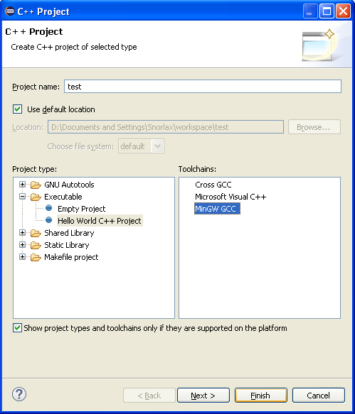
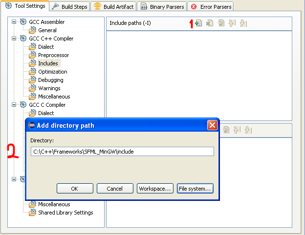
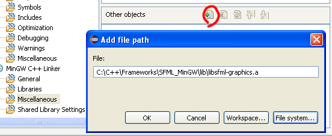
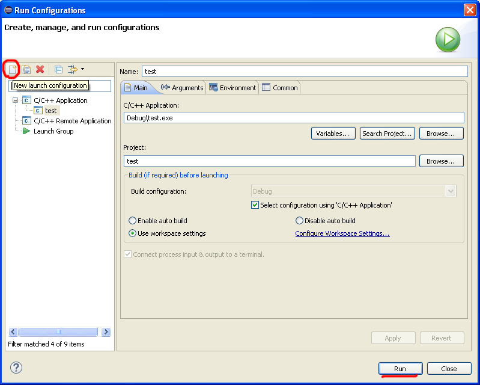

Настройка проекта C++ в Eclipse на примере приложения SFML
Всем доброго времени суток! При настройке проекта в Eclipse я столкнулся с несколькими проблемами. После попыток найти решение этих проблем, я находил очевидные советы на забугорных форумах, которые не решали проблему. Почесав затылок, я начал решать проблемы сам. В статье я детально опишу настройку Eclipse CDT, MinGW, подключение header'ов и библиотек. Статья расчитана для новичков.
Определения
Eclipse CDT — интегрированная среда разработки С и C++ на базе платформы Eclipse.
MinGW — компилятор, нативный программный порт GNU Compiler Collection (GCC) под Microsoft Windows, вместе с набором свободно распространяемых библиотек импорта и заголовочных файлов для Windows API. MinGW позволяет разработчикам создавать нативные приложения Microsoft Windows.
SFML — свободная кроссплатформенная мультимедийная библиотека, написана на C++.
Установка Eclipse и MinGW
Для работы Eclipse требуется Java.
Скачиваем Eclipse CDT с официального сайта и распаковываем в любое удобное место, например C:\eclipse. Запускаем eclipse.exe, если все заработало, прекрасно.
Далее качаем установщик MinGW. Запускаем его. Видим окно с описанием, нажимаем Install. Если нужно меняем место установки и нажимаем Continue.
Отмечаем для установки mingw-32-base и mingw-gcc-g++.
После этого нажимаем Installation -> Apply Changes. На открывшемся окне жмем Apply и ждем пока загрузятся и установятся компоненты. Когда установка закончена, качаем msys. Думаю при установке сложностей не возникнет. Теперь нужно добавить в системную переменную Path путь к папке bin MinGW, и к папке bin msys.
У меня получилось так: d:\MinGW\bin\;d:\msys\1.0\bin\
Качаем SFML MinGW, и распаковываем куда угодно.
На этом подготовка окончена.
Создание и настройка проекта C++
Запускаем Eclipse, нажимаем File -> New -> C++ Project. Создаем проект Hello World и выбираем MinGW как на картинке.

Далее ПКМ на созданном проекте -> Properties, открываем C/C++ Build -> Settings -> Tool Setting -> GCC C++ Compiler -> Includes.
1. Нажимаем Add.
2. Выбираем папку includes из директории, куда мы распаковали SFML.

После этого переходим на пункт Preprocessor и в Defined Symbols добавляем SFML_DYNAMIC.
Вот мы подошли к моменту где я получил первую ошибку. Если подключить библиотеку с расширением .a через MinGW C++ Linker -> Libraries, ничего работать не будет. Эти библиотеки нужно подключать через MinGW C++ Linker -> Miscellaneous как Other Object. Указываем путь к библиотекам SFML, нужно подключить libsfml-graphics.a, libsfml-window.a, libsfml-main.a

Построение проекта
Заменяем весь код в автоматически созданном .cpp на этот:
#include "SFML/Graphics.hpp"
int main()
{
sf::RenderWindow window(sf::VideoMode(640, 480), "Test");
while(window.isOpen()){
sf::Event event;
while(window.pollEvent(event)){
if(event.type == sf::Event::Closed){
window.close();
}
window.clear();
window.display();
}
}
return 0;
}
Нажимаем Build. Все соберется успешно но работать не будет, так как отсутствуют dll. Копируем все из папки bin в директории SFML в папку Debug нашего проекта.
Теперь жмем ПКМ на .exe файле, который расположен в папке Debug нашего проекта, выбираем Run As -> Run Configurations, жмем C/C++ Application и нажимаем New launch configuration, после этого нажимаем Run ничего не меняя.

После этого запускать проект можно с помощью Ctrl + F11 или соответствующей иконкой на тулбаре.
Видим окно с черным фоном, все работает.